Para este ejemplo vamos a emplear la siguiente imagen FITS, esta es un mosaico apilado usando SWarp hecho con datos de Subaru Suprime-Cam

Empezamos, al igual que antes, por leer el header de la imagen FITS para obtener información que nos sea útil.

GAIN, SATUR_LEVEL, PIXEL_SCALE y SEEING_FWHM
De aquí obtenemos los siguientes datos para usarlos en nuestro archivo de configuración principal de SExtractor:
GAIN |
2835 |
|---|---|
SATUR_LEVEL |
1330 |
PIXEL_SCALE |
$5.160235\times 10^{-5}\times 3600 \approx 0.186\ \text{arcsec/pixel}$ |
SEEING_FWHM |
0.789 |
Ahora, vamos a determinar que filtro de convolución vamos a emplear, esto lo hacemos al igual que con la imagen anterior del Legacy survey:
$$ FWHM_{pix}=\frac{0.789}{0.186}\approx 4.2 $$
Con esta escala del FWHM en píxeles podemos determinar que el filtro conveniente a usar es gauss_3.0_5x5.conv, ya con estos parámetros iniciales modificados podemos empezar a determinar el background, para ello usaremos los parámetros que están por defecto (BACK_SIZE=64 y BACK_FILTERSIZE=3) y pedimos las imagenes de chequeo BACKGROUND, -BACKGROUND.
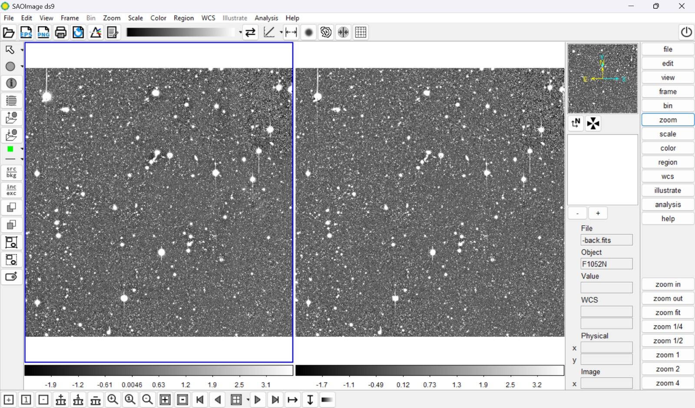
-BACKGROUND (der), podemos notar como algunos objetos perdieron algo de brillo.

BACKGROUND)
En la figura anterior podemos observar algunas estrellas que parecen ser estrellas saturadas, sin embargo, el resto de la imagen parece estar bien, por lo que podemos continuar con el análisis de la imagen con los parámetros por defecto. Posteriormente, vamos a determinar los valores de umbralización que utilizará SExtractor, los parámetros DETECT_THRESH y ANALYSIS_THRESH los vamos a tomar con los valores por defecto, es decir, de 1.5, sin embargo, para determinar si este nivel de umbral es el indicado vamos a tomar los datos de la imagen de manera negativa, así, en teoría, si el nivel de umbral es el correcto, no deberíamos detectar ningun objeto ya que no hay fuentes negativas. Para ello, vamos a realizar un pequeño código en python:
from astropy.io import fits
hdul = fits.open('/content/SCLA.175.295.W-S-Z+.fits', ignore_missing_simple=True)
data, hdr = fits.getdata('/content/SCLA.175.295.W-S-Z+.fits', header=True)
fits.writeto('imagen_neg.fits', -data, hdr, overwrite=True)
Con esto, corremos SExtractor con la imagen negativa que generamos con el código anterior, y solicitamos las imagenes de chequeo APERTURES y SEGMENTATION.
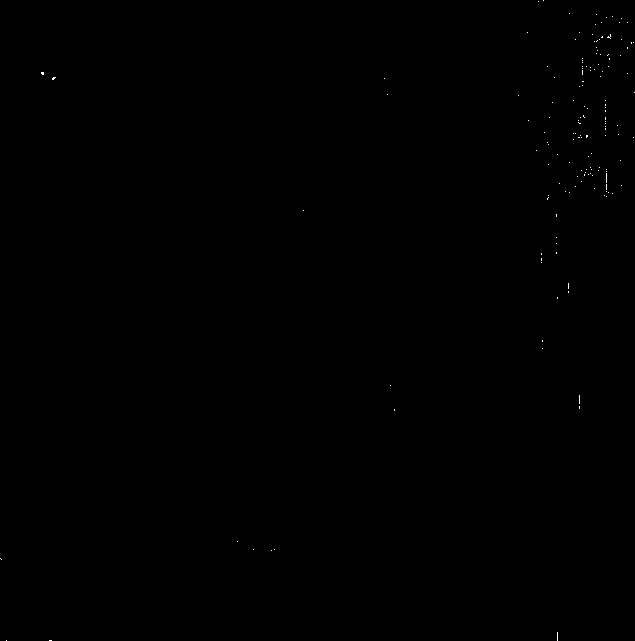
SEGMENTATION de la imagen negativa, vemos claramente que hay detecciones de objetos, la mayoria se encuentran en la parte superior derecha de la imagen.
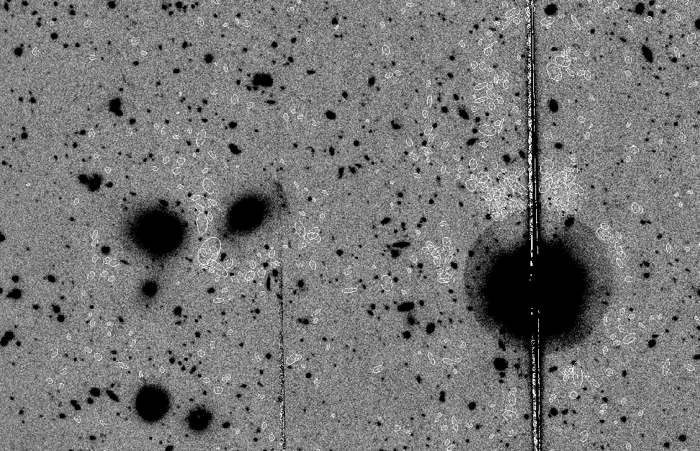
APERTURES de la imagen negativa, en esta imagen nos enfocamos en la región superior derecha donde se concentra la mayoría de las detecciones.
En las figuras 35 y 36, podemos notar que SExtractor esta detectando objetos en la imagen negativa, por lo que nuestro nivel de umbralización es demasiado bajo, vamos a volver a correr SExtractor con DETECT_THRESH y ANALYSIS_THRESH con valores de (2.0, 2.5, 3.0, 3.5 y 4.0).
| Nivel de umbralización | Objetos detectados | Objetos extraidos |
|---|---|---|
| 1.5 | 3688 | 2973 |
| 2.0 | 875 | 736 |
| 2.5 | 566 | 462 |
| 3.0 | 472 | 403 |
| 3.5 | 404 | 350 |
| 4.0 | 342 | 297 |
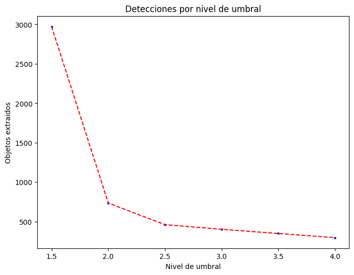
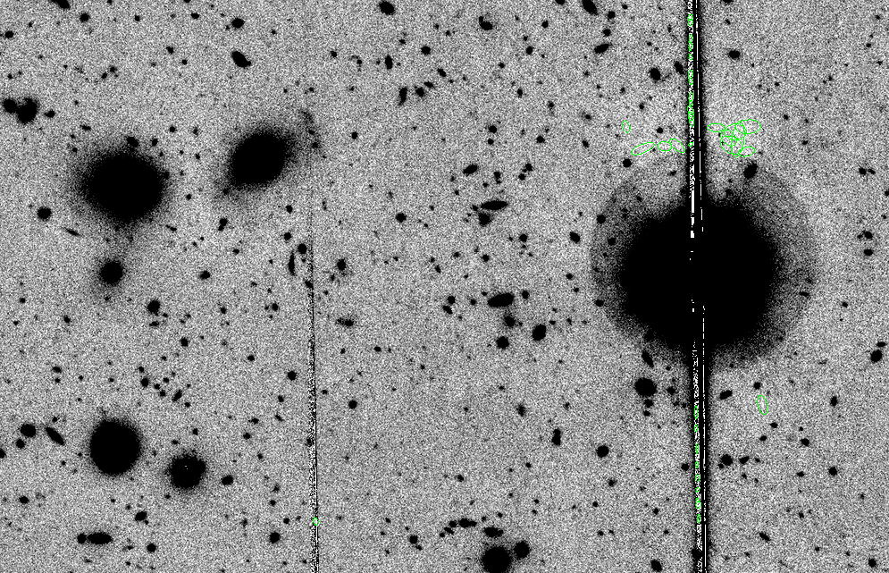
APERTURES de la imagen negativa con un nivel de umbral de 2.5, podemos notar una gran disminución en la región superior derecha de la imagen, en comparación con la figura 36, sin embargo aún hay detecciones de objetos.
Con el umbral configurado, pasaremos a establecer el valor para DETECT_MINAREA, tomaremos valores de (3,5,7,10,12,15) y analizaremos el número de objetos detectados y extraidos, tomemos en cuenta que ya dejamos de lado la imagen negativa para usar la imagen original.
DETECT_MINAREA |
Objetos detectados | Objetos extraidos |
|---|---|---|
| 3 | 69498 | 62910 |
| 5 | 66021 | 60065 |
| 7 | 63249 | 57764 |
| 10 | 59181 | 54085 |
| 12 | 56889 | 52059 |
| 15 | 53262 | 48791 |
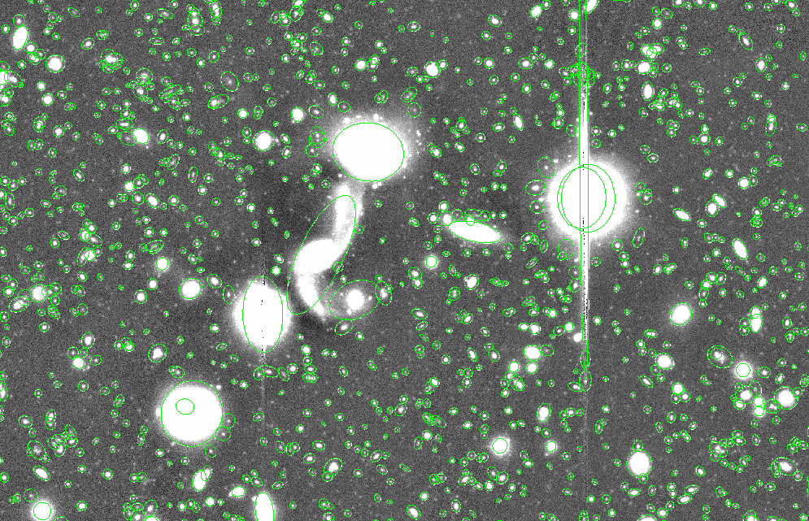
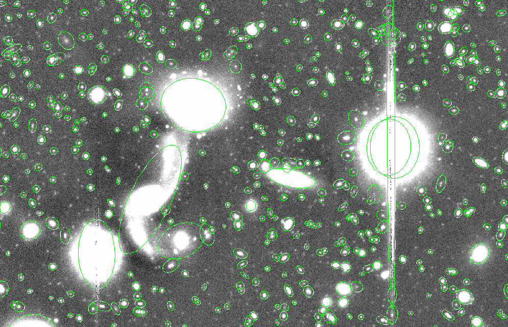
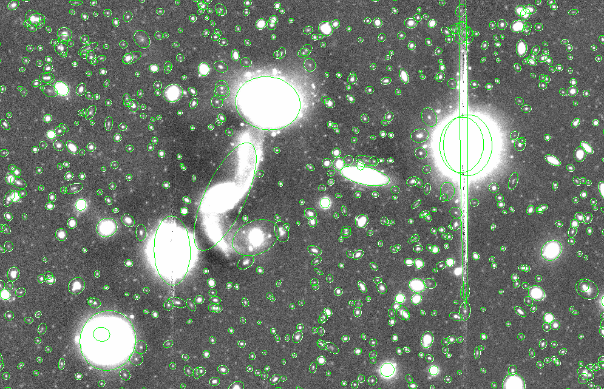
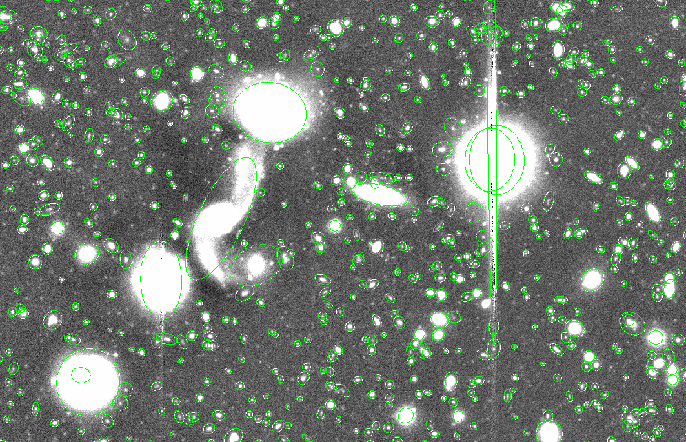
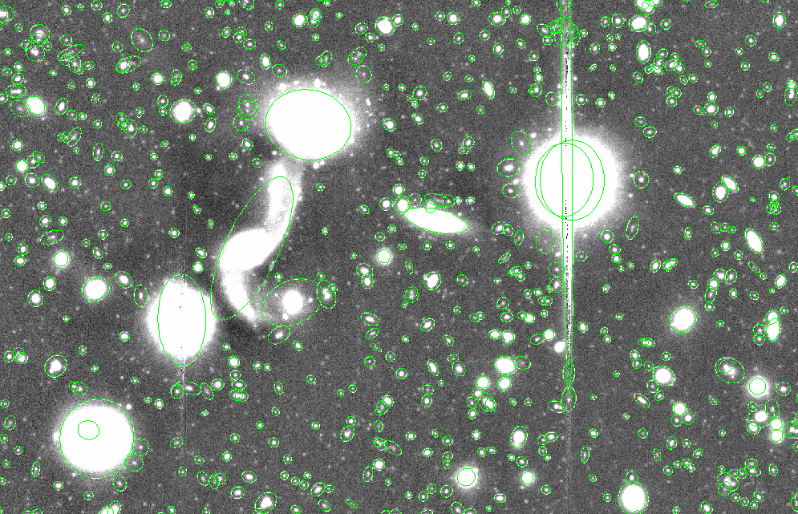
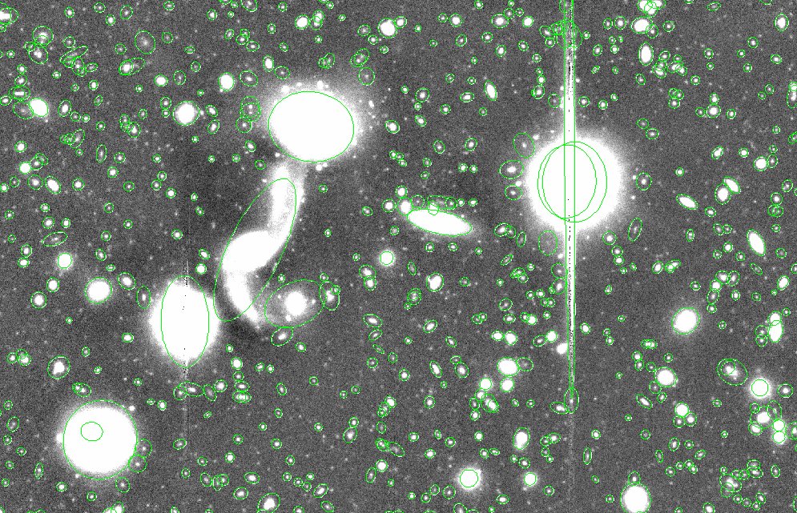
APERTURES con diferentes valores de DETECT_MINAREA, podemos notar que a medida que aumentamos el valor de este parámetro el número de objetos detectados y extraidos disminuye.
APERTURES con valores de DETECT_MINAREA de 3 (izq) y 15 (der).
Con estas imágenes de chequeo podemos decidir que un valor de DETECT_MINAREA, y como se ha mencionado antes, el valor que se elige depende de las detecciones que se quieren obtener, particularmente, para este caso, vamos a elegir un valor de 5, ya que nos permite obtener un número considerable de objetos detectados y extraidos.
Con lo anterior, podemos pasar al proceso de deblending, para ello vamos a tomar el parámetro DEBLEND_NTHRESH en 32 niveles y el parámetro DEBLEND_MINCONT con valores de (0.001, 0.005, 0.01, 0.05, 0.1 y 0.5).
DEBLEND_MINCONT |
Objetos detectados | Objetos extraidos |
|---|---|---|
| 0.001 | 67624 | 61359 |
| 0.005 | 66021 | 60065 |
| 0.01 | 65188 | 59349 |
| 0.05 | 63182 | 57373 |
| 0.1 | 62304 | 56420 |
| 0.5 | 61309 | 55248 |
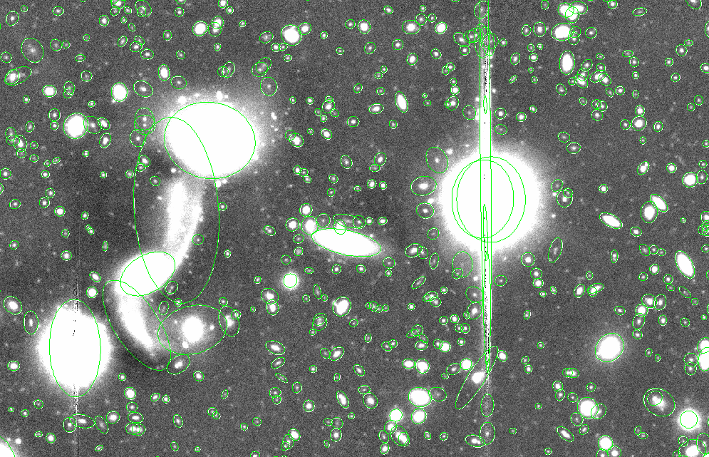
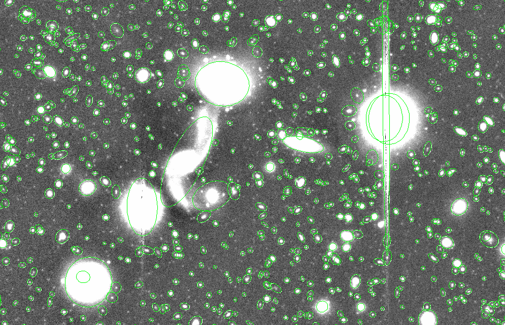
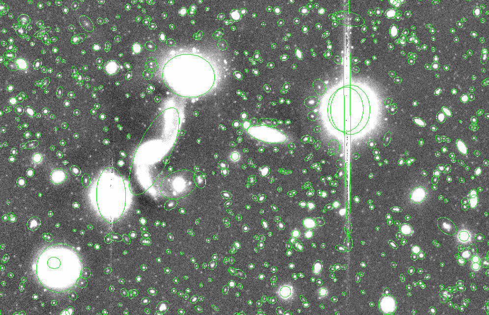
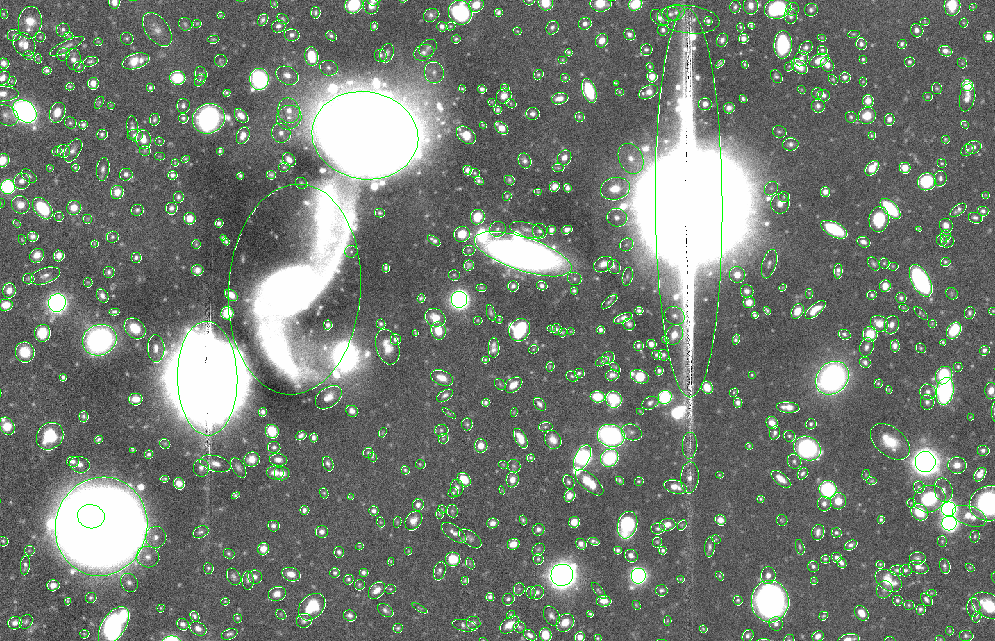
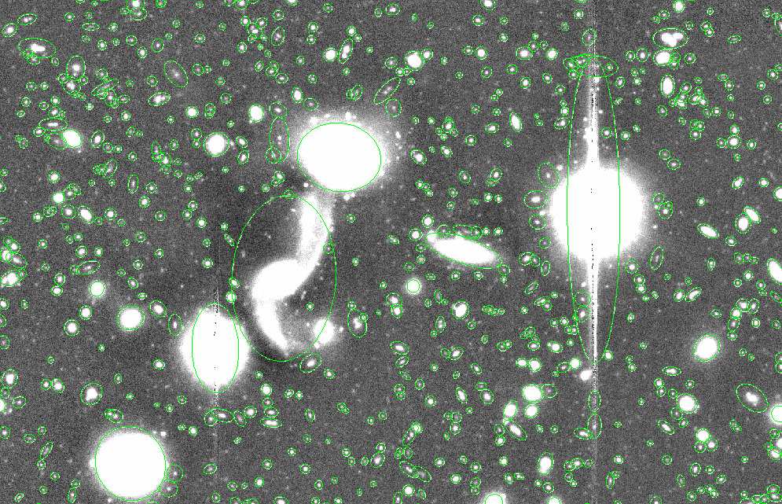
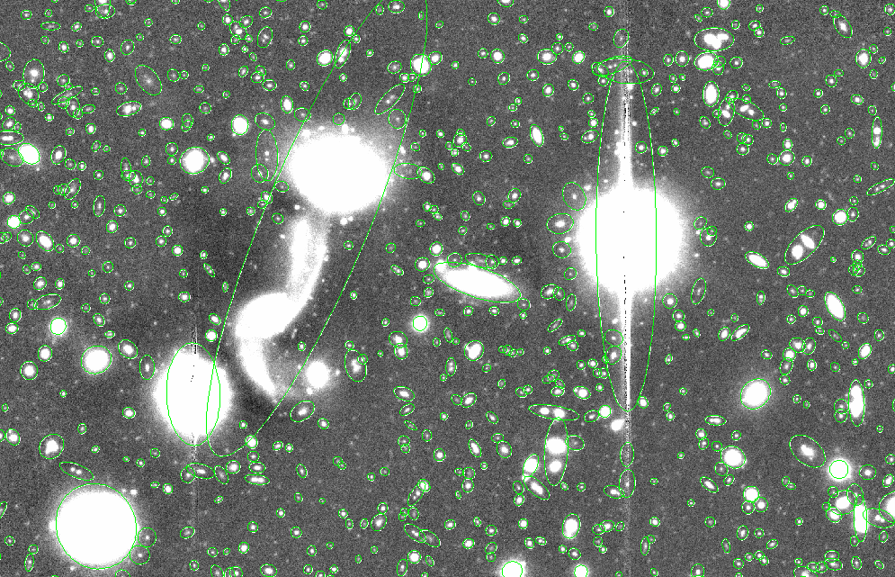
APERTURES con diferentes valores de DEBLEND_MINCONT, a medida que el valor de este parámetro aumenta, el número de objetos detectados y extraidos disminuye, esto se debe a que SExtractor junto objetos que considera que son parte de un mismo objeto.
Analizando las imagenes anteriores, tenemos diferencias bastante notorias incluso entre los valores de 0.001 y 0.005, y al igual que antes, el valor que se elige depende de las detecciones que se quieren obtener, para este caso, vamos a elegir un valor de 0.005, ya que hace un deblending bastante bueno.
Con esto, ya tenemos los parámetros de SExtractor necesarios para obtener un catálogo adecuado, sin embargo, aún nos falta el proceso de PSFEx para obtener un catálogo con parámetros más precisos. Para ello, vamos a correr SExtractor con los siguientes parámetros:
X_IMAGE
Y_IMAGE
FLUX_RADIUS
FLUX_APER(1)
FLUXERR_APER(1)
ELONGATION
FLAGS
SNR_WIN
VIGNET(35,35)
Además, debemos asegurarnos de que el catálogo que generamos tenga el formato FITS_LDAC, finalmente creamos nuestro catálogo con el archivo de configuración que se edito (archivo .sex) y los parámetros necesarios para usar PSFEx.
Con esto, creamos un nuevo directorio en donde emplearemos PSFEx, creando el archivo principal de configuración con el siguiente comando:
psfex -dd > default.psfexAhora, debemos editar este archivo para hacer uso de PSFEx, para ello vamos a tomar los siguientes valores para cada parámetro:
PSF_SIZE |
35,35 |
BASIS_TYPE |
PIXEL_AUTO |
PSFVAR_KEYS |
X_IMAGE, Y_IMAGE |
PSFVAR_DEGREES |
2 |
SAMPLE_MINSN |
20 |
SAMPLE_MAXELLIP |
0.3 |
Con el archivo ya configurado, vamos a correr PSFEx y analizamos los resultados obtenidos, para ello hacemos uso del siguiente comando:
psfex prepsfex.fits -c default.psfexEsto nos genera un archivo XML con información de la PSF, además, solicitamos las imagenes de chequeo y las graficas de distintos parámetros. Primero, veamos la información del archivo XML:
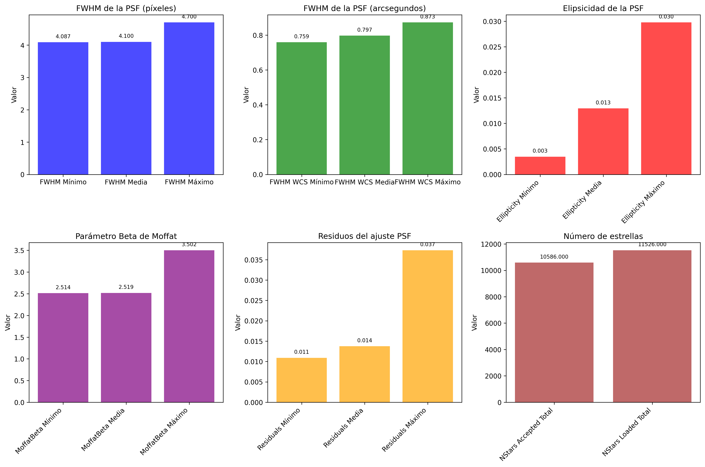
FWHM, recordemos que este parámetro mide que tan "ancha" o dispera se ve una fuente puntual en la imagen, para este caso tenemos un valor mínimo de 4.087 y una media de 4.100, teniendo valores cercanos, sin embargo, tenemos un máximo de 4.7, este valor se dispara sugiriendo que en la mayoría del campo se tiene un buen enfoque, sin embargo, hay alguna zona o estrella con una PSF más ancha.
Elipsicidad de la PSF, este parámetro nos define que tan ovalada es la PSF, en los datos proporcionados por el archivo XML podemos notar que los valores son pequeños con un mínimo de 0.003, una media de 0.013 y un máximo de 0.030.
Parámetro de Moffat, PSFEx ajusta la forma de la PSF usando un perfil de Moffat, en donde el parámetro $\beta$ controla que tan "puntiagudo" es el centro vs. qué tan extendidas son las alas del perfil. Para este valor tenemos una media de 2.519 y un máximo de 3.502.
Residuos del ajuste PSF, este parámetro indica qué tan bien el modelo de PSF ajustado reproduce las estrellas reales usadas para construirlo (menor es mejor). Tenemos un mínimo de 0.011, una media de 0.014 y un máximo de 0.037, esta diferencia con el máximo podría deberse a la zona u estrella del FWHM máximo.
Número de estrellas, por último, PSFEx nos dice el número de estrellas que cargo y las que acepto, teniendo valores de 11526 y 10586 respectivamente. Esto significa que PSFEx uso el $91.8\%$ de las estrellas detectadas para construir el modelo de la PSF.
Ahora, pasamos a verificar las imagenes de chequeo y las graficas que nos proporciona PSFEx para seguir analizando si el ajuste del modelo es limpo y bueno. Primero, veamos el diagrama de selección que uso PSFEx para elegir qué fuentes son "estrellas puntuales".
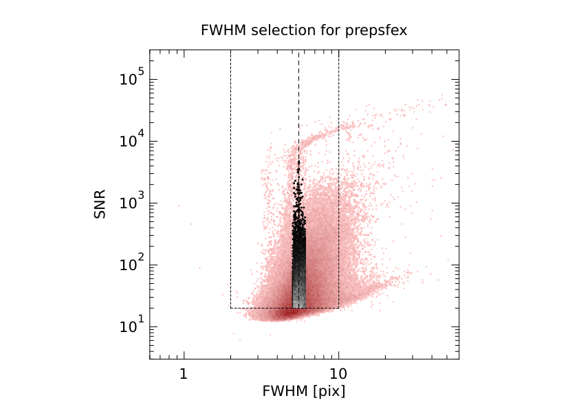
Podemos observar en el diagrama la selección que hizo PSFEx, las estrellas que seleccionó están dentro de la columna vertical oscura.
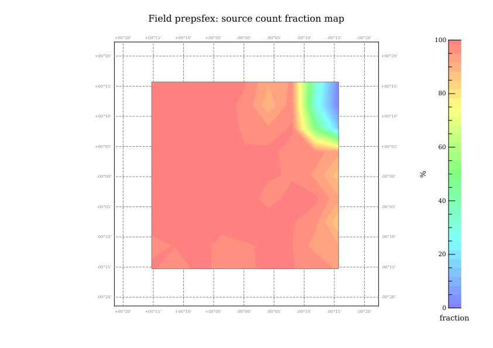
En el grafico anterior, podemos notar que en la esquina superior derecha cae abruptamente a valores muy pequeños, esto debe ser debido a que muy pocas estrellas de esa zona pasaron los filtros de selección.
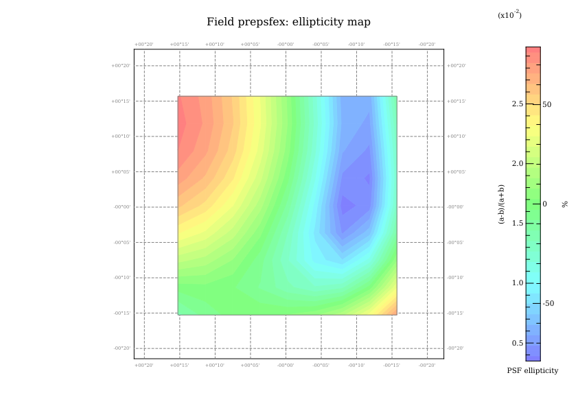
Tenemos una elipticidad mayor en la zona superior izquierda y se va estableciendo en la zona central de la imagen, por otra parte, hay una región en donde la elipticidad es muy pequeña, es decir, en esta zona la PSF es más circular. Y en la esquina inferior derecha parece que empieza a aumentar de nuevo la elipticidad.
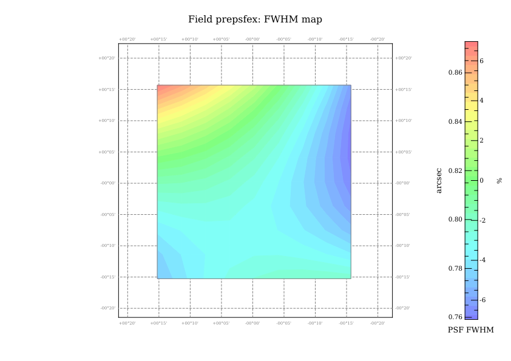
Al igual que en el mapa de elipticidad, tenemos valores mayores en la región superior izquierda, en esta región las estrellas son más anchas o desenfocadas en esta región, mientras que disminuye en la zona central/derecha.
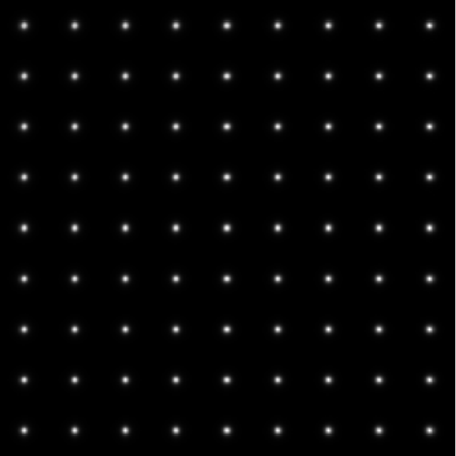
SNAPSHOTS, muestra una muestra que PSFEx seleccionó para construir el modelo de PSF.